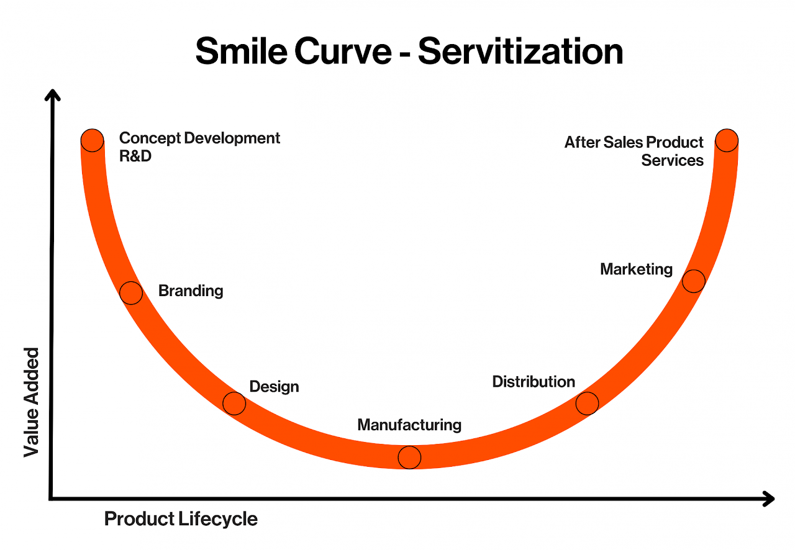
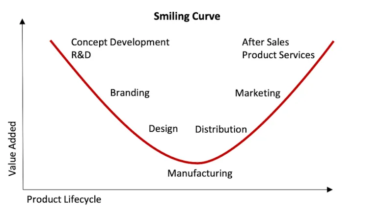
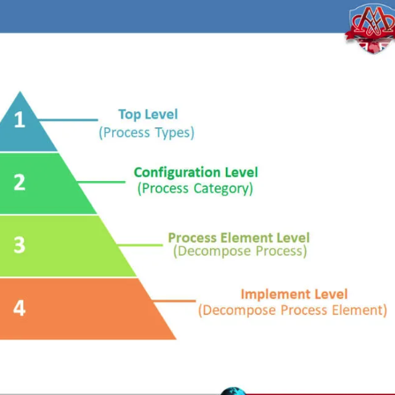
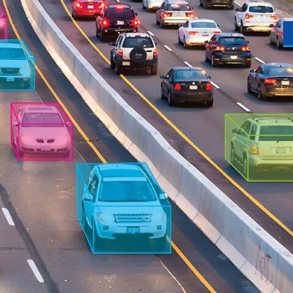
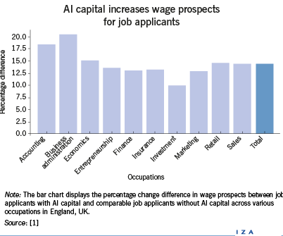

research project · Apr – May 2026
The Invisible Chain
The invisible human cost of global logistics. One-click ordering hides the people who physically make and move our goods. This project uses the Smile Curve to show why they are paid the least, and argues that the gap is a design feature of global supply chains, not a glitch.
Why has physical labor become systematically undervalued in a world of instant delivery, and how does this create poverty chains that keep workers in cycles of inequality?
images/plane.jpgimages/truck.jpgimages/ship.jpgmy argument
A feature, not a bug
Most people treat global labor as a simple debate between providing jobs and exploiting workers. My research shows that the problem is structural. Costinot, Vogel and Wang (2012) show that pay gaps are built into the system’s logic: because production happens in a fixed order, the most productive workers end up at the final stages of the chain, and lower-skilled workers in the Global South are pushed into the earliest, lowest-paying roles. That efficiency needs a bottom tier of labor to function.
My stance: the systematic undervaluation of physical labor is a deliberate structural feature of global supply chains. The Smile Curve shows value being redirected away from manufacturing and toward Western branding, which institutionalizes poverty for workers in the Global South.
images/author.jpgthe background
The logistics of inequality
The Smile Curve
First proposed in the 1990s, the Smile Curve shows how value is distributed across a product’s life. The two ends, pre-production (R&D, design) and post-production (marketing, retail), capture the most profit. The middle, physical manufacturing, is a “valley” of low value added (Rungi & Del Prete, 2018). Put simply: the system pays the people who physically make the goods the least.
The “one-click” world
International trade expanded rapidly after 1990, and countries stopped trading only finished goods; they started trading tasks (World Bank, 2020). A single phone or pair of sneakers can cross a dozen borders before it reaches your door. Unbundling production lets brands distance themselves from conditions in the factories they hire, and keeps consumers focused on the brand and the price tag instead of the worker.

images/smile-curve.jpgKey terms
Global North vs. South
Economic power, not just geography. The North (e.g., US, EU) controls the high-value ends of the curve; the South (e.g., Bangladesh, Vietnam) is held in the low-value middle.
Shadow factories
Unregistered sites operating outside government oversight, where the worst labor-rights violations happen, hidden behind layers of subcontracting (World Bank, 2020).
Poverty chains
Supply chains that rely on the “superexploitation” of workers to stay competitive in a global market.
Michigan State University’s overview of the stages of a supply chain: the context for how tasks get unbundled across the globe.
the data
Evidence of the value gap
The Smile Curve is measurable. Baldwin and Ito (2021) analyzed international input–output data in the Canadian Journal of Economics and found value moving toward the ends of the chain:
- The high ends: research, development and marketing capture the most profit.
- The squeezed middle: the value of physically making the product has fallen.
Our economy values the front end of business far more than the behind-the-scenes labor that makes a product exist.

images/smiling-curve.jpgTestimony: Maya’s story
Maya Aktar, a garment worker from Bangladesh, describes being the invisible part of the chain:
“I left my home… for a job at a garment factory in Jordan… we could hardly make ends meet.”Aktar, 2022, UN News
As a liaison officer, she points to a structural barrier: language. Most workers from Bangladesh or India don’t speak Arabic or English, so when “instructions, announcements, and financial documents are in these languages,” workers are walled off from their own rights (Aktar, 2022). The chain is held together not just by low wages but by a lack of transparency and communication.
images/maya-aktar.jpgThe digital poverty chain: AI labor
The pattern holds in high tech. Casilli et al. (2025) show that AI production resembles a traditional poverty chain: an invisible workforce in low-income countries does repetitive data labeling for very low pay. In global value chain terms, data labeling is the new “task” (World Bank, 2020). The high-value coding happens in Silicon Valley, while the essential, labor-intensive labeling sits in the valley of the curve.
Training AI models follows the same geography of exploitation as 20th-century manufacturing.
sociology & policy
Worker identity and future reform
Workers aren’t passive units of labor. In my study of the restaurant industry, workers built social networks, mutual-aid systems and their own hierarchies based on skill and tenure, none of which management sees. Labor is a social ecosystem, not just a transaction.
Scholars disagree on how far these networks go. Some sociologists argue mutual aid is enough to provide dignity and resilience; the World Development Report 2020 suggests informal networks can’t escape the Smile Curve trap without policy. My view: build on these networks to form stronger, more inclusive unions, like the ones Maya Aktar (2022) supports by using her languages to bridge management and workers.
images/workplace-networks.jpgThree policy proposals
Supply chain transparency
Move past voluntary Fair Trade labels: require “Value Distribution Tags” on retail goods showing what share of the price stayed with the manufacturing workforce.
images/qr-labels.jpgClose subcontracting loopholes
Pass Joint-Liability laws making the brand at the top legally responsible for every link beneath it, however many subcontracting layers deep (World Bank, 2020).

images/shadow-factory-map.jpgDigital labor rights
Classify AI data labelers as employees, not independent contractors, so “algorithmic management” can’t be used to bypass minimum-wage laws.

images/ai-data-labeling.jpgThe debate: is the chain broken, or working as intended?
Some trade theorists see global supply chains as an engine of poverty reduction: low-skill manufacturing lets developing countries enter the global market, which eventually leads to industrialization and growth (World Bank, 2020).
Costinot, Vogel and Wang (2012) argue supply chains institutionalize wage inequality: high-productivity firms in the North systematically match with low-wage labor in the South, so the gap is permanent, not a phase. Without transparency and Joint-Liability laws, the system defaults to exploitation. The question isn’t whether the chain works, but who it works for.

images/ai-capital-wages.jpgfinal reflections
Breaking the chain
I started this project seeing one-click logistics as a triumph of technology. Applying the Smile Curve showed me that the efficiency often rests on making labor invisible. Maya Aktar’s testimony was the turning point: it turned abstract economic “tasks” into real people fighting language barriers and subcontracting loopholes.
The Invisible Chain isn’t a market failure; it’s a design choice. While AI capital offers some wage gains (Drydakis, 2024), it risks reinforcing these inequalities unless it comes with radical transparency.
Can a consumer truly act ethically in a system designed to hide the worker? Even with Fair Trade labels, Tier 2 and Tier 3 shadow factories stay opaque.
images/maritime-to-digital.jpgTake action
receipts
Works cited
- Aktar, M. (2022, March 12). First person: ‘I speak up for those who cannot’. UN News. https://news.un.org/en/story/2022/03/1113482
- Baldwin, R., & Ito, T. (2021). The smile curve: Evolving sources of value added in manufacturing. Canadian Journal of Economics, 54(4), 1842–1880. https://doi.org/10.1111/caje.12555
- Casilli, A. A., Tubaro, P., Cornet, M., Le Ludec, C., Torres-Cierpe, J., & Braz, M. V. (2025). Global inequalities in the production of artificial intelligence: A four-country study on data work [Preprint]. arXiv. https://doi.org/10.48550/arXiv.2410.14230
- Costinot, A., Vogel, J., & Wang, S. (2012). Global supply chains and wage inequality. American Economic Review, 102(3), 396–401. https://doi.org/10.1257/aer.102.3.396
- Drydakis, N. (2024). Artificial intelligence and labor market outcomes. IZA World of Labor. https://doi.org/10.15185/izawol.515
- Rungi, A., & Del Prete, D. (2018). The smile curve at the firm level: Where value is added along supply chains. Economics Letters, 164, 38–42. https://doi.org/10.1016/j.econlet.2017.12.038
- World Bank. (2020). World development report 2020: Trading for development in the age of global value chains. https://doi.org/10.1596/978-1-4648-1457-0